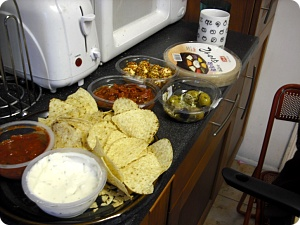
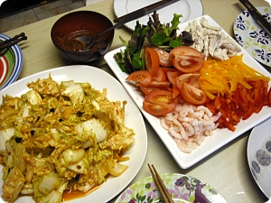
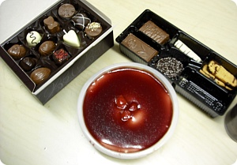
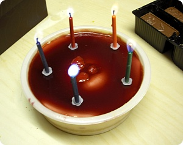
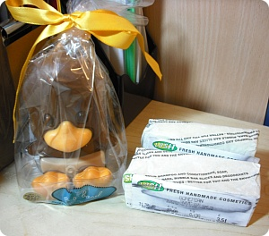

최근 여기저기서 잘 얻어먹고있음^^***
학교 큰프로젝트 마감이 끝나거나
한가하면 다같이 모여서 밥먹는게 정기행사처럼 되어버린듯^^
저번일요일날 M언니 생일파티겸 겸사겸사
다같이 모여서 밥을 먹었당
학교 큰프로젝트 마감이 끝나거나
한가하면 다같이 모여서 밥먹는게 정기행사처럼 되어버린듯^^
저번일요일날 M언니 생일파티겸 겸사겸사
다같이 모여서 밥을 먹었당

죠~기 위에 라이스페이퍼 인기폭발임 ;D
Japanese house 김/라이스페이퍼 공급책인 나 ㅋㅋ

배추하나 사와서 겉절이..............라고 주장하는 이상한 김치고춧가루무침 만들고
그동안 다른츠자들은
라이스페이퍼안에 넣어먹을 야채준비랑 냄비요리+_+
일본나베~맛나////
근처 학교기숙사에서 사는 H양도 불러서
일욜날 5명이서 신나게 먹고 떠들었음
그동안 다른츠자들은
라이스페이퍼안에 넣어먹을 야채준비랑 냄비요리+_+
일본나베~맛나////
근처 학교기숙사에서 사는 H양도 불러서
일욜날 5명이서 신나게 먹고 떠들었음

요건 M언니가 자기생일이라고 직접사온 M&S 케키 ㅋㅋㅋ
그리고 H양이 들고온 쪼코//ㅅ//
그리고 H양이 들고온 쪼코//ㅅ//


요건 1월달 마감의 폭풍속에서 그냥 지나간 내생일
선물 늦어서 미안하다믄서 챙겨준 쪼코랑 러쉬비누
감샤감샤///아이쿳 뭐 이런걸>_<
그리고 오늘은 오랜만에 작년에 졸업하고
런던으로 이사간 또다른 M양이 놀러오기로해서
다같이 또 냄비요리 준비중~케케
오오~요즘 아쥬 잘먹어서 얼굴이빤닥빤닥합니다 그려///
선물 늦어서 미안하다믄서 챙겨준 쪼코랑 러쉬비누
감샤감샤///아이쿳 뭐 이런걸>_<
그리고 오늘은 오랜만에 작년에 졸업하고
런던으로 이사간 또다른 M양이 놀러오기로해서
다같이 또 냄비요리 준비중~케케
오오~요즘 아쥬 잘먹어서 얼굴이빤닥빤닥합니다 그려///